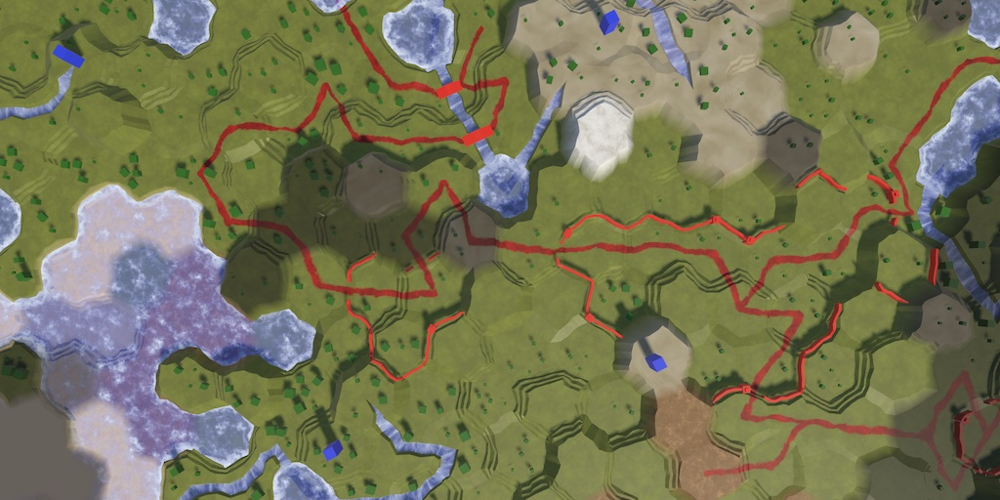

Hex Map 3.0.0
No More Cell Game Objects
- Upgrade to Unity 2022.
- Only store cells in a single place.
- Eliminate cell game objects.

This tutorial is made with Unity 2022.3.12f1 and follows Hex Map 2.3.0.
Project Upgrade
For this tutorial we upgrade from the 2021 LTS to the 2022 LTS. Specifically to Unity 2022.3.12f1, URP 14.0.9, and Burst 1.8.9. Although the project will keep working fine we consider this a change that breaks backward compatibility and thus increase our main release version to 3.
The only warning that we get is that we have to upgrade the Transform node in the Road shader graph. We can simply do that, it doesn't make a difference.
Enter Play Mode Options
From now on I have also enabled the Project Settings / Editor / Enter Play Mode Options, with both domain and scene reloading disabled. The project works fine with these settings, which speeds up entering play mode in the editor.
Shadows
I have increased the URP asset's Shadow / Max Distance to 400 to always have shadows, even when fully zoomed out. Depth Bias has been decreased to 0.5 to avoid too much peter-panning. This is a performance test and might be too heavy for some systems, in which case you can set the max back to 150.
I keep Conservative Enclosing Sphere disabled because it causes many useless shadows to be rendered. The issue is that this setting doesn't play nice with the max distance. Better shadow tuning is something to investigate in the future.
I have turned off shadow casting for all Farm prefabs, as they're so flat their shadows aren't visible anyway. This can save a lot of (batched) draw calls when many farms are in view.
Terrain Texture Array
The Terrain Texture Array was made with a custom inspector, from the time that Unity didn't have an import option for texture arrays. Now that this is properly supported I have replaced the individual textures and custom asset with a single atlas imported as a texture array.
This also solves the issue of getting corrupt terrain textures when exporting to mobiles, as the DXT1 compression format was baked into the asset. Now it gets exported using an appropriate format for the build target.
Code Cleanup
I have finished the C# code style modernization that started in earlier versions.
The Scripts / Editor folder and the scripts inside it have been removed. That were the texture array exporter and hex coordinates drawer, both of which are no longer used.
The unused local originalViewElevation variable has been removed from the HexCell.Elevation and HexCell.WaterLevel property setters. The unused direction parameter has been removed from HexGridChunk.TriangulateWithRiverBeginOrEnd method and its invocation.
The Transform.SetLocalPositionAndRotation method has been used when both position and rotation are set together, which is the case in the HexFeatureManager.AddFeature and HexFeatureManager.AddSpecialFeature methods.
More Cell Work
In the previous tutorial we started to slim down HexCell. This time we continue this process, by no longer making it extend MonoBehaviour and doing away with cell game objects. Before we can make that step we have to make a number of changes throughout the project. As HexCell will turn into a serializable class we have to make sure that the cells are only stored in a single place, otherwise we'd get duplicate cells after a hot reload.
Shader Data
We first focus on HexCellShaderData. We begin by adding a ShaderData property to HexGrid.
public HexCellShaderData ShaderData => cellShaderData;
This allows us to remove the same property from HexCell, as we can now retrieve it from the grid instead of storing a reference to it per cell.
//public HexCellShaderData ShaderData//{ get; set; }
Replace all usage of ShaderData with Grid.ShaderData to keep everything working. Also remove the assignment to the deleted property from HexGrid.CreateCell.
//cell.ShaderData = cellShaderData;
Next, refactor rename the transitioningCells list of HexCellShaderData to transitioningCellIndices and change its element type to int. From now on it will store cell indices instead of direct references to cells.
List<int> transitioningCellIndices = new();
In RefreshVisibility we now have to store the cell's index.
transitioningCellIndices.Add(cell.Index);
And change the first parameter of UpdateCellData to an index as well. We now have to get the cell from the grid there to access its data.
bool UpdateCellData(int index, int delta)
{
//int index = cell.Index;
HexCell cell = Grid.GetCell(index);
…
}
This does add a level of indirection when needing to access cell data, but that overhead is tiny and not noticeable.
Path From Index
HexCell also shouldn't keep direct references to other cells. This is still the case for its PathFrom property, which is used for pathfinding. Replace it with a PathFromIndex property.
//public HexCell PathFrom//{ get; set; }public int PathFromIndex { get; set; }
Then adjust HexGrid.GetPath so its loop keeps working.
for (HexCell c = currentPathTo; c != currentPathFrom; c = cells[c.PathFromIndex])
{
path.Add(c);
}
Also fix ClearPath and ShowPath.
//current = current.PathFrom;current = cells[current.PathFromIndex];
And the two assignments in Search.
//neighbor.PathFrom = current;neighbor.PathFromIndex = current.Index;
We could also do this for HexCell.NextWithSamePriority, but as it is only used while searching we can suffice with making its backing field non-serialized. The whole pathfinding system should be refactored in the future so we're not going to make this pretty now.
[field: System.NonSerialized]
public HexCell NextWithSamePriority
{ get; set; }
For the same reason we do not need to adjust HexCellPriorityQueue, as it doesn't survive hot reloads itself.
Paths
The next step is to replace the currentPathFrom and currentPathTo fields of HexGrid with index alternatives. We'll use −1 everywhere to indicate a missing cell index, replacing null.
//HexCell currentPathFrom, currentPathTo;int currentPathFromIndex = -1, currentPathToIndex = -1;
Change GetPath so it works with the indices and returns an index list.
public List<int> GetPath()
{
…
List<int> path = ListPool<int>.Get();
for (HexCell c = cells[currentPathToIndex];
c.Index != currentPathFromIndex;
c = cells[c.PathFromIndex])
{
path.Add(c.Index);
}
path.Add(currentPathFromIndex);
…
}
Adapt ClearPath, ShowPath, and FindPath as well.
public void ClearPath()
{
if (currentPathExists)
{
HexCell current = cells[currentPathToIndex];
while (current.Index != currentPathFromIndex)
{
…
}
…
}
else if (currentPathFromIndex >= 0)
{
cells[currentPathFromIndex].DisableHighlight();
cells[currentPathToIndex].DisableHighlight();
}
currentPathFromIndex = currentPathToIndex = -1;
}
void ShowPath(int speed)
{
if (currentPathExists)
{
HexCell current = cells[currentPathToIndex];
while (current.Index != currentPathFromIndex)
{
…
}
}
cells[currentPathFromIndex].EnableHighlight(Color.blue);
cells[currentPathToIndex].EnableHighlight(Color.red);
}
public void FindPath(HexCell fromCell, HexCell toCell, HexUnit unit)
{
ClearPath();
currentPathFromIndex = fromCell.Index;
currentPathToIndex = toCell.Index;
…
}
Units
HexUnit keeps track of its location and its current travel location as direct references to cells. Replace those with indices as well. Its pathToTravel field must also become an index list.
//HexCell location, currentTravelLocation;int locationCellIndex = -1, currentTravelLocationCellIndex = -1; … List<int> pathToTravel;
Adjust its Location property so it internally works with the location index. Adjust ValidateLocation along with it.
public HexCell Location
{
get => Grid.GetCell(locationCellIndex);
set
{
if (locationCellIndex >= 0)
{
HexCell location = Grid.GetCell(locationCellIndex);
Grid.DecreaseVisibility(location, VisionRange);
location.Unit = null;
}
locationCellIndex = value.Index;
…
}
}
…
public void ValidateLocation() =>
transform.localPosition = Grid.GetCell(locationCellIndex).Position;
The Travel method must now work with an index list.
public void Travel(List<int> path)
{
HexCell location = Grid.GetCell(locationCellIndex);
location.Unit = null;
location = Grid.GetCell(path[^1]);
locationCellIndex = location.Index;
…
}
Also adjust TravelPath so it works with the indices. We could make changes to more methods to pass cell indices around instead of getting the cells here, but we leave that for later, doing the minimum amount of work to keep things functional. The current state of HexCell is still transitory. Once we have arrived at a final data representation for cells in the future we can do a pass to clean up our code.
IEnumerator TravelPath()
{
Vector3 a, b, c = Grid.GetCell(pathToTravel[0]).Position;
yield return LookAt(Grid.GetCell(pathToTravel[1]).Position);
if (currentTravelLocationCellIndex < 0)
{
currentTravelLocationCellIndex = pathToTravel[0];
}
HexCell currentTravelLocation = Grid.GetCell(currentTravelLocationCellIndex);
…
for (int i = 1; i < pathToTravel.Count; i++)
{
currentTravelLocation = Grid.GetCell(pathToTravel[i]);
currentTravelLocationCellIndex = currentTravelLocation.Index;
a = c;
b = Grid.GetCell(pathToTravel[i - 1]).Position;
…
Grid.IncreaseVisibility(Grid.GetCell(pathToTravel[i]), VisionRange);
…
Grid.DecreaseVisibility(Grid.GetCell(pathToTravel[i]), VisionRange);
t -= 1f;
}
currentTravelLocationCellIndex = -1;
HexCell location = Grid.GetCell(locationCellIndex);
…
…
ListPool<int>.Add(pathToTravel);
pathToTravel = null;
}
The Die and Save methods must also be adjusted. As a unit that dies always has a location we can eliminate the check for a valid location here.
public void Die()
{
HexCell location = Grid.GetCell(locationCellIndex);
//if (location)
//{
Grid.DecreaseVisibility(location, VisionRange);
//}
…
}
…
public void Save(BinaryWriter writer)
{
Grid.GetCell(locationCellIndex).Coordinates.Save(writer);
writer.Write(orientation);
}
The last HexUnit method that needs tweaking is OnEnable.
void OnEnable()
{
if (locationCellIndex >= 0)
{
HexCell location = Grid.GetCell(locationCellIndex);
transform.localPosition = location.Position;
if (currentTravelLocationCellIndex >= 0)
{
HexCell currentTravelLocation =
Grid.GetCell(currentTravelLocationCellIndex);
Grid.IncreaseVisibility(location, VisionRange);
Grid.DecreaseVisibility(currentTravelLocation, VisionRange);
currentTravelLocationCellIndex = -1;
}
}
}
I also deleted the old commented-out code for the debug visualization of paths, as that is now defunct anyway.
Game UI
HexGameUI keeps track of the current cell, which should also become an index.
//HexCell currentCell;int currentCellIndex = -1;
Update DoSelection and DoPathfinding to work with the index.
void DoSelection()
{
grid.ClearPath();
UpdateCurrentCell();
if (currentCellIndex >= 0)
{
selectedUnit = grid.GetCell(currentCellIndex).Unit;
}
}
void DoPathfinding()
{
if (UpdateCurrentCell())
{
if (currentCellIndex >= 0 &&
selectedUnit.IsValidDestination(grid.GetCell(currentCellIndex)))
{
grid.FindPath(
selectedUnit.Location, grid.GetCell(currentCellIndex), selectedUnit);
}
else
{
grid.ClearPath();
}
}
}
And UpdateCurrentCell as well. In this case we have to insert a null check to replace it with −1.
bool UpdateCurrentCell()
{
HexCell cell = grid.GetCell(Camera.main.ScreenPointToRay(Input.mousePosition));
int index = cell ? cell.Index : -1;
if (index != currentCellIndex)
{
currentCellIndex = index;
return true;
}
return false;
}
Map Editor
HexMapEditor also has a reference to a previous cell, used for drag events. Replace it with an index too.
//HexCell previousCell;int previousCellIndex = -1;
Adjust all code that relies on the previous cell.
void Update()
{
…
previousCellIndex = -1;
}
…
void HandleInput()
{
HexCell currentCell = GetCellUnderCursor();
if (currentCell)
{
if (previousCellIndex >= 0 && previousCellIndex != currentCell.Index)
{
ValidateDrag(currentCell);
}
else
{
isDrag = false;
}
EditCells(currentCell);
previousCellIndex = currentCell.Index;
}
else
{
previousCellIndex = -1;
}
UpdateCellHighlightData(currentCell);
}
…
void ValidateDrag(HexCell currentCell)
{
for (…)
{
if (hexGrid.GetCell(previousCellIndex).GetNeighbor(dragDirection) ==
currentCell)
{
isDrag = true;
return;
}
}
isDrag = false;
}
Grid Chunks
Finally, HexGridChunk stores all its cells in an array. This needs to become an index array. First, give it a property for the grid.
public HexGrid Grid
{ get; set; }
Set it in HexGrid.CreateChunk.
HexGridChunk chunk = chunks[i++] = Instantiate(chunkPrefab); chunk.transform.SetParent(columns[x], false); chunk.Grid = this;
Then change the array in HexGridChunk and all code that uses it.
//HexCell[] cells;int[] cellIndices; Canvas gridCanvas; void Awake() { gridCanvas = GetComponentInChildren<Canvas>(); cellIndices = new int[HexMetrics.chunkSizeX * HexMetrics.chunkSizeZ]; } public void AddCell(int index, HexCell cell) { //cells[index] = cell; cellIndices[index] = cell.Index; … } … public void Triangulate() { … for (int i = 0; i < cellIndices.Length; i++) { Triangulate(Grid.GetCell(cellIndices[i])); } … }
No Longer a Game Object
Now that we have sanitized our code the cells are only stored in the grid's array, ignoring the transient search data, so hot reloads won't create duplicates cells once they are no longer Unity components.
First, delete the Hex Cell prefab. Then make HexCell no longer extend MonoBehaviour and make it serializable instead.
[System.Serializable] public class HexCell//: MonoBehaviour{ … }
Second, as cells no longer have a Transform component turn Position into an auto property and use that instead of the old local position in RefreshPosition.
public Vector3 Position//=> transform.localPosition;{ get; set; } … void RefreshPosition() { Vector3 position = Position; … Position = position; … }
Third, there are many places in the code where Unity's implicit conversion from UnityEngine.Object to boolean is used to detect the existence of cells. To keep all that working add an implicit cast to boolean operator method that performs a null check.
public static implicit operator bool(HexCell cell) => cell != null;
Fourth, HexGridChunk.AddCell no longer has to set the cell's parent, as cells no longer exists in Unity's hierarchy.
//cell.transform.SetParent(transform, false);
Finally, remove the cellPrefab configuration field from HexGrid and adjust CreateCell so it creates a new HexCell object and sets its position.
//[SerializeField]//HexCell cellPrefab;… void CreateCell(int x, int z, int i) { … var cell = cells[i] = new HexCell(); cell.Grid = this; cell.Position = position; … }
Our project should still work exactly the same, but now without cell game objects. This has gotten us one step closer to making cells compatible with Burst jobs, but we aren't there yet. Note that each cell still has UI game objects, those exist separately.
The next tutorial is Hex Map 3.1.0.